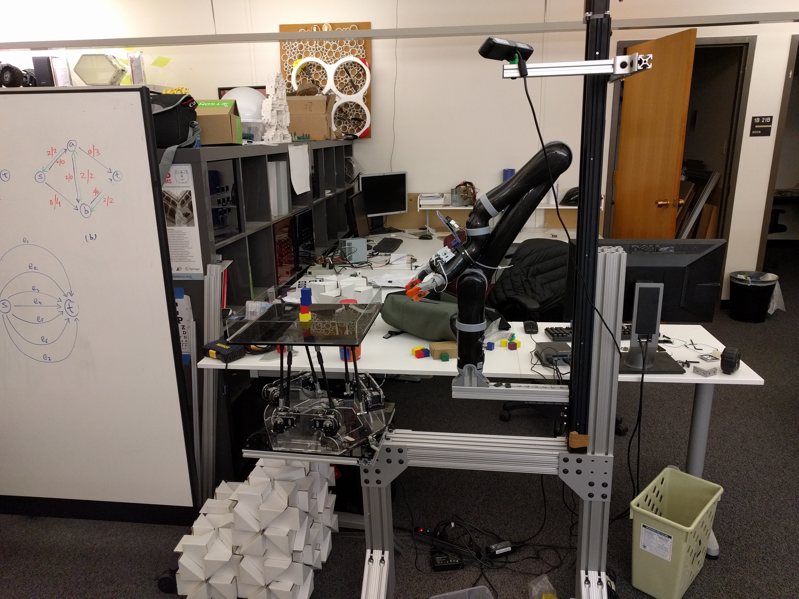
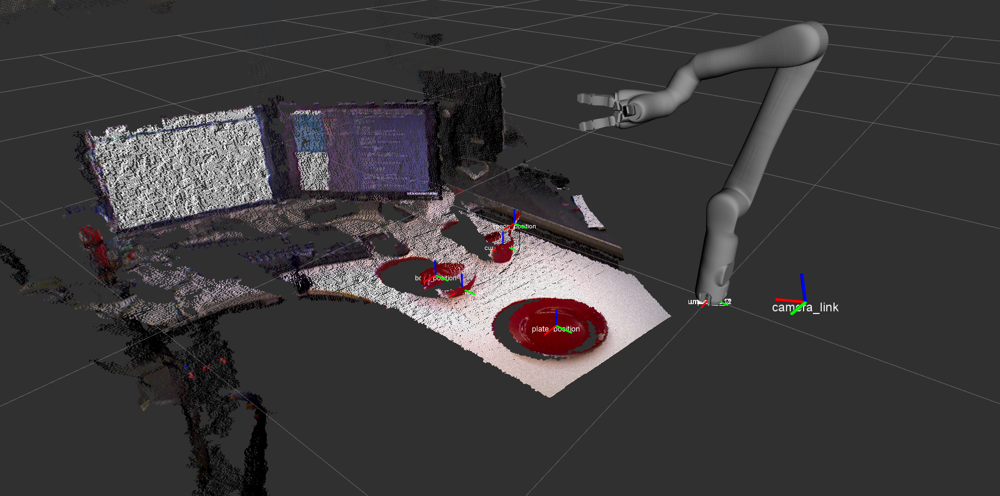
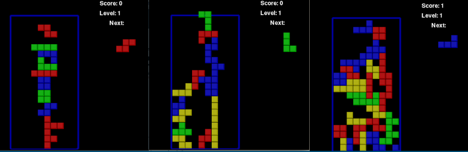
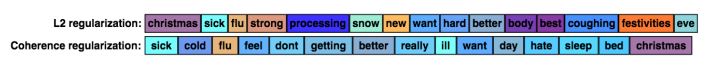
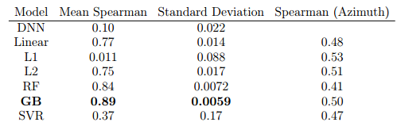
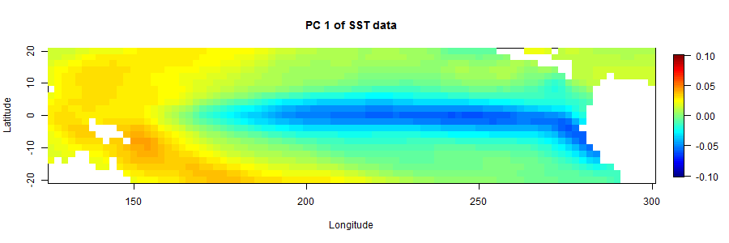
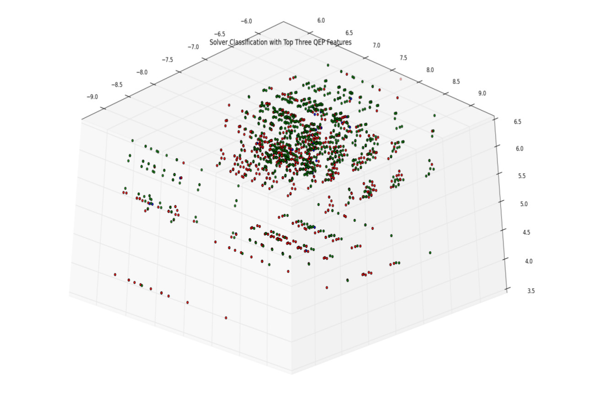

## Projects

### The Application of Guided Policy Search to Learn Visuo-tactile Motor Control to Solve Robotic Manipulation Task

Using novel IR-based tactile sensors, we attempt to reduce the training time require to learn direct motor control for various manipulation task. We train a neural network to approximate the expected award for each time step in the execution of a task by training it via guided policy search. We also designed a platform to provide continous data collection for an assortment of task. Future work includes using generative models to model the enviroment for learning offline.


### Correll Lab Manipulation and Perception Stack



A robotic manipulation and perception stack for performing unstructured manipulation task. The stack provides abstraction of low level modules through an action database designed with SMACH. The stack provides users with the ability to quickly prototype task while alloting easy debugging. Also allows users to test new perception and inverse kinematic solvers though a modular interface. Currently designed to work with Kinova Jaco, Rethink Robotics Baxter, MoveIt, and Asus Xtion.


### Swarm Intelligence Inspired Deep Q-Networks



Deep Learning (DL) and Deep Q-Networks (DQN) are powerful machine learning methods that can approximate any function. However, many projects that may benefit from them are hesitant to integrate DL or DQN into their system due to a lack of resources required to properly train them. Since these methods need a large amount of training data to learn from, having DL and DQN more efficiently learn from training data is a constant problem being tackled by machine learning researchers. Unfortunately, improving the efficiency of training often requires the development of novel activation functions, loss functions or optimization methods. We discuss how concepts in self-organization and swarm intelligence may provide alternative methods to increase the efficiency of training DL and DQN. In particular, we will introduce a novel DQN training framework in which multiple agents will collaborate with each other to develop a better solution to a problem.


### Training Linear Classifiers and Neural Networks Using Coherence Based Regularization



A novel regularization approach that encourages words with similar co-occurrence patterns to have similar regression parameters. Specifically, the parameters have a multivariate normal distribution as the prior which encodes covariance between parameters. This prior encourages words that are positively (or negatively) correlated to have similar (or dissimilar) coefficients.


### Comparison of Methods Used to Predict the Locations and Specificity of sg-RNAs for CRISPR-Cas9



CRISPR-Cas9 is a genome editing technique that allows for the editing of small sequences in DNA using a single guide RNA (sgRNA). However, sgRNA can bind to off-target locations. This causes the Cas9 enzyme to make cuts in off-target locations and this can have profound effects on transcription from the resulting DNA. In order to mitigate these effects, it is imperative to devise a method for predicting the specificity of an sgRNA for off-target locations. The Microsoft developed application Azimuth sought to use a variety of methods to predict specificity of sgRNAs. In this paper we benchmark Azimuth and compare it to our own implementation which uses neural networks. The feature set that we created boosted the performance of many of the models significantly. With the exception of SVR and L1, we saw an average 73% increase in performance. With this increase in performance, we see that GB is the best model thus far for this dataset.


### Data Mining Correlations between Global Climate Variables and Indian Summer Monsoon Rainfall



Describes the Data Mining correlations between Global Climate Variables and Indian Summer Monsoon Rainfall. Such correlations could yield useful generalizations in various scenarios such as weather prediction, extreme, atmospheric model generation, agricultural planning, calamity prevention, route planning, geographical studies, etc. We construct a model to correlate global sea surface temperatures with Indian Summer Monsoon Rainfall, as has been done traditionally, but also open up other areas of the global oceans for the model as well. 


### Generating Customized Quadratic Eigenvalue Solutions in Lighthouse



Solving quadratic eigenvalue problems (QEP) gives scientists and engineers higher levels of detail and accuracy in their numerical experiments. Unfortunately, difficulties with using parallel numerical QEP solvers limit their accessibility and effectiveness. Users generally lack the expertise needed to implement their own solvers, so they must resort to expert-developed numerical libraries. However, the libraries’ complexity means that users have to scour through documentation and research to use them effectively. Even then, users may have to determine which solver to use experimentally. The likelihood of identifying the best-performing solver is low, so users are left with programs that can take hours or days to execute on high-end systems. Lighthouse is a web-based taxonomy that guides HPC application developers in finding appropriate linear algebra solvers. It facilitates the use of advanced routines and libraries by generating customized code templates for user specific needs and provides ready access to library documentation. Because selecting a QEP solver is a difficult task and QEPs are widely used. We explored several machine learning (ML) techniques to help us determine the best way to guide users in finding an appropriate


### Automated Shipping System Via Autonomous Delivery Truck and All-Terain Drop-off Bot


With the advent of autonomous cars comes the advent of autonomous delivery. We designed a robotic delivery system, once dropped off by an autonomous delivery truck, can deliver a package autonomously to your doorstep. Capabale of delievering a wide range of packages, the delivery bot features a self-stabalizing platform via a stewart platform.
